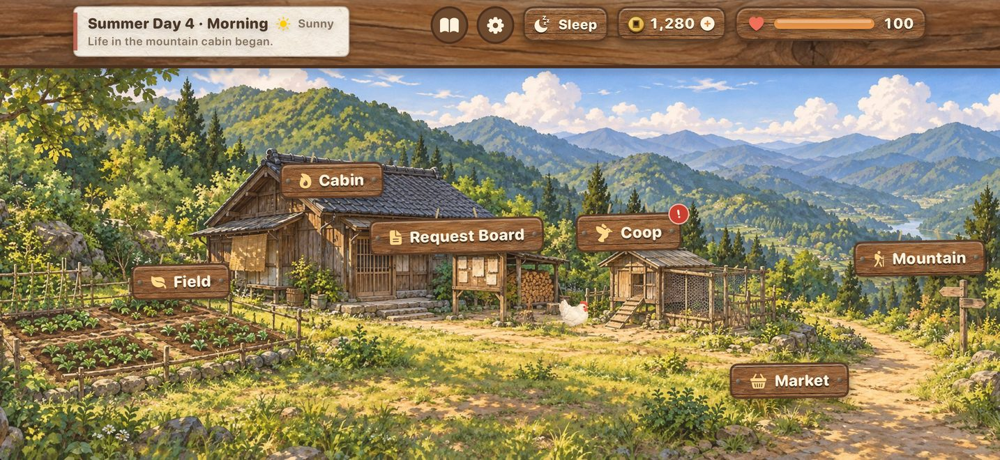
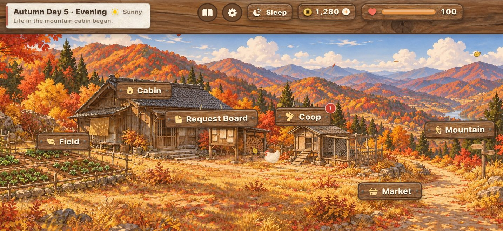
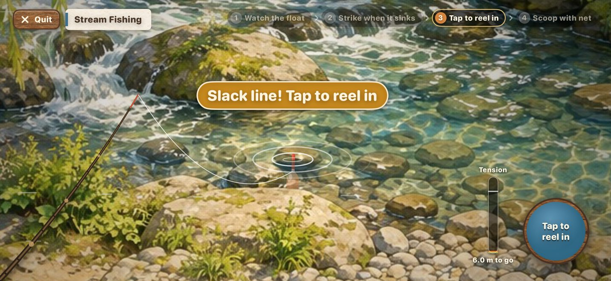
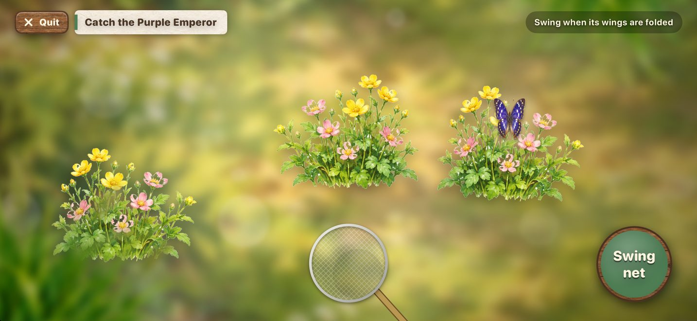
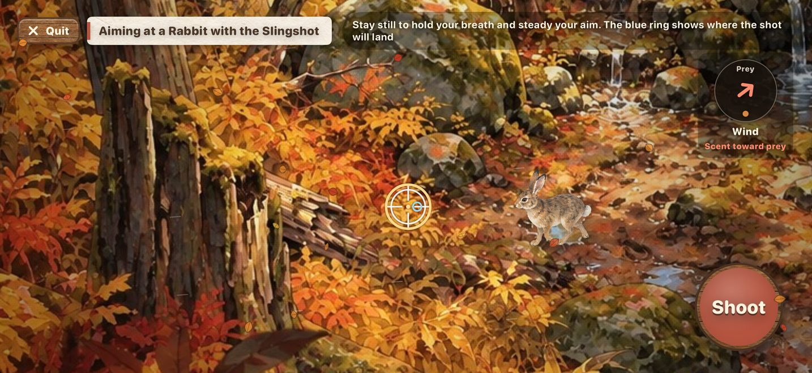
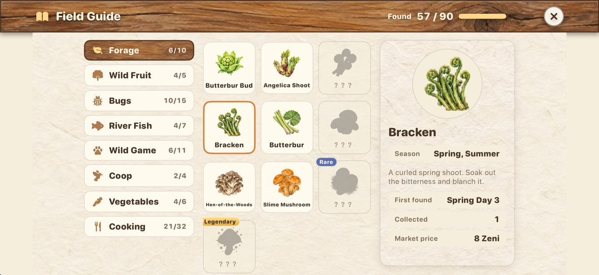

What is YamaGurashi?
YamaGurashi is a cozy slow-life game for iPhone. Live in a mountain cabin, tend your field and chickens, and head into the mountains to go fishing, catch bugs, forage and hunt as the seasons change. Set in a hand-painted, watercolor-style mountain village in Japan, it lets you enjoy a full year of spring, summer, autumn and winter at your own pace.
- Genre
- Slow-life simulation (single player)
- Price
- Free (no in-app purchases)
- Ads
- Optional rewarded ads only
- Devices
- iPhone (iOS 17 or later), landscape
- Data
- Saved on your iPhone and in your own iCloud
- Languages
- English, Japanese
What you can do






FAQ
Is it free to play?
Yes. There are no in-app purchases, and you can play all the way through for free.
Are there ads?
No ads play on their own. If you choose to watch an ad, you get in-game "Zeni" or a small bonus such as crops or eggs. Zeni is not real money and can't be exchanged or used outside the game. Watching ads is entirely optional, and you can finish the game without them. Zeni ads are limited to 3 per day.
Can I play offline?
Yes. The internet is only used when you watch an ad and when your save is stored in iCloud.
Where is my save stored?
On your iPhone. If iCloud is available, it's also stored in your own iCloud so you can continue on another iPhone with the same Apple Account. The developer never receives your save data.
Can I continue on a new iPhone?
Sign in with the same Apple Account on your new iPhone, make sure iCloud is on, then install the app to pick up where you left off. Restoring from an iPhone backup also keeps your save.
What happens if I delete the app?
The save on your iPhone is deleted, but the copy in iCloud stays, so you can get it back by reinstalling.
What can I collect?
90 entries in the Field Guide: wild greens and mushrooms, wild fruit, 14 kinds of bugs, river fish, wild game, coop goods, vegetables and dishes. Some legendary creatures, like the Golden Trout and the Golden Beetle, appear only very rarely.
Which languages and devices are supported?
English and Japanese, on iPhone with iOS 17 or later. The game is played in landscape.
Contact
For bug reports or feedback, please email:
For bug reports, it helps to include your iPhone model, iOS version, and what you were doing when the problem happened.